DAVID G. SIMPSON
Personal Web Site
ALASKA PHOTO ALBUM: PAGE 4
| 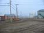 Barrow street scene. It was common to see small four-wheel All-Terrain Vehicles (ATVs) being driven through the streets. |
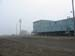 The Top of the World Hotel, where I stayed overnight in Barrow. Most buildings were up on pylons like this, so that they could be supported in the permafrost. My room was on the first floor, third window from the left. |
|
| 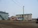 Osaka restaurant in Barrow, near my hotel. |
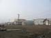 Barrow street scene. |
|
| 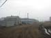 Barrow street scene. |
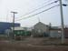 Some houses in Barrow, across from the hotel. The big blue building on the left is the police station. |
|
| 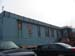 Pepe's North of the Border Mexican restaurant. This was adjacent to the Top of the World hotel where I was staying. I had enchiladas for lunch here. |
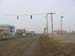 Barrow's only traffic light. It was turned off. It's only used when school is in session, so that students from the elementary school can cross the street safely. |
|
| 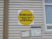 My flight out of Barrow was delayed, so I spent some time walking around town and found this on the wall of Ipalook Elementary School -- the Barrow Scale Model of the Solar System. There was a sign for each planet along the streets, spaced in proportion to the actual distances of the planets from the Sun. The Sun and inner Solar System were here on the walls of the school, and the other planets were on telephone poles along Ahkovak and Okpik Streets. I followed the signs and found all the planets. |
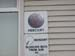 Mercury. |
|
| 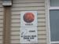 Venus. |
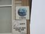 Earth. |
{kind=link}
{kind=link}
{kind=link}
{kind=link}
{kind=link}
{kind=link}
{kind=link}
{kind=link}
{kind=link}
{kind=link}
{kind=link}
{kind=link}
| <<< Previous | Page 4 of 7 | Next >>> |
|---|
Contact Information
I may be contacted at: